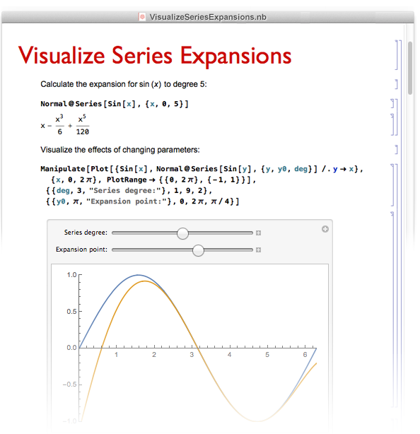

# Jupyter ### notebooks & écosystème <br /> <br /> <br /> <br /> 11/2019 <div class="container" style="margin-top: 50px;"> <div class="col"> </img> </div> <div class="col"> </img> </div> <div class="col" style="font-size: 1.2rem; text-align:right;"> Pierre Poulain <br /> pierre.poulain@univ-paris-diderot.fr <br /> @pierrepo </div> </div> <div style="position: fixed; left: 0px; bottom: 0px; z-index: 31; font-size: 15px; line-height: 1; color: #c0c0c0;"> <p> Except where otherwise noted, this content is licensed under a Creative Commons Attribution-ShareAlike 4.0 International license (CC BY-SA 4.0). </p> </div> --- <!-- .slide: style="text-align: left;" --> ## Objectifs d'apprentissage - Définir ce qu'est un notebook. - Décrire l'écosystème Jupyter. - Créer et utiliser un notebook Jupyter. - Écrire du texte en Markdown. --- <!-- .slide: style="text-align: left;" --> ## Notebook (en science) - « cahier électronique d'analyses » <!-- .element: class="fragment" --> - document : <!-- .element: class="fragment" --> - code + résultats + graphiques <!-- .element: class="fragment" --> - explications + images + formules mathématiques... <!-- .element: class="fragment" --> <div class="fragment" style="margin-top: 100px;"> « Literate programming » de Donald E. Knuth (1984) : <cite>Treat a program as literature understandable to human beings</cite> </div> ---  </img> <div class="ref" style="text-align: left;"> Source : <a href="https://www.wolfram.com/language/fast-introduction-for-math-students/en/notebook-documents/">Wolfram / Mathematica</a> </div> --- <img src="assets/img/rmarkdown.png" height="600px" style="margin:0px; "> </img> <div class="ref" style="text-align: left;"> Source : <a href="https://rmarkdown.rstudio.com/authoring_quick_tour.html">R Markdown Quick Tour</a> </div> --- <img src="assets/img/lorenz.jpg" height="600px" style="margin-top:-30px;"> </img> <div class="ref" style="margin-top: 10px;text-align: left;"> Source : <a href="https://sinews.siam.org/Details-Page/jupyter-tools-for-the-life-cycle-of-a-computational-idea">Jupyter: Tools for the Life Cycle of a Computational Idea</a>, Siam News, 2018. </div> --- <!-- .slide: style="text-align: left;" --> ### Une idée d'hier, aujourd'hui techniquement possible... <br /> <div style="text-align: center;"> #### The Scientific Paper Is Obsolete <img src="assets/img/scientific_paper_obsolete.gif" heigth="400px"> </div> <div class="ref"> Source : <a href="https://www.theatlantic.com/science/archive/2018/04/the-scientific-paper-is-obsolete/556676/">The Atlantic</a>, 05/04/2018. </div> --- <!-- .slide: style="text-align: left;" --> ### Une idée d'hier, aujourd'hui techniquement possible... <br /> An open RNA-Seq data analysis pipeline tutorial with an example of reprocessing data from a recent Zika virus study : - [papier](https://f1000research.com/articles/5-1574/v1), F1000 Research, Wang & Ma'ayan, **2016**. - [notebook](http://nbviewer.jupyter.org/github/maayanlab/Zika-RNAseq-Pipeline/blob/master/Zika.ipynb) --- <!-- .slide: style="text-align:left;font-size:2rem;"--> ### Des perspectives <div class="fragment" style="margin-top:50px"> <a href="https://www.nature.com/news/interactive-notebooks-sharing-the-code-1.16261">Interactive notebooks: Sharing the code</a>, Shen, Nature, 2014. <div style="font-style:italic;font-size:2rem;"> "We used to speak two different languages. I would talk about the biology and she would talk about coding. Now we have common ground; we can <strong>communicate to each other better</strong>. This accelerates our research." she says. </div> </div> <div class="fragment" style="margin-top:50px"> <a href="https://www.nature.com/articles/d41586-018-07196-1">By Jupyter it all makes sense</a>, Perkel, Nature, 2018. <div style="font-style:italic;font-size:2rem;"> Thanks to an <strong>improved interface</strong> and tools for <strong>running in the cloud</strong>, take-up of the computational notebook is rocketing </div> </div> </div> --- ## Projet Jupyter <!-- .slide: style="text-align: left;" --> <div class="container"> <div class="col fragment"> <img src="assets/img/jupyter-logo.svg" height="250px" style="vertical-align:midle;"> </img> <https://jupyter.org/> <div style="color:#b9b9b9;"> 2001 - F Pérez (iPython) </div> 2014 - F Pérez & B E Granger </div> <div class="col fragment"> </img> </div> </div> --- <!-- .slide: style="text-align: left;" --> ## Jupyter notebook <br /> - « cahier électronique d'analyses » - dans un navigateur web <!-- .element: class="fragment" --> - Julia, Python, R, C++... <!-- .element: class="fragment" --> - code + résultats + graphiques + explications + formules...<!-- .element: class="fragment" --> - export : py, R, md, html, pdf <!-- .element: class="fragment" --> <div class="fragment" style="margin-top: 150px; font-size: 1.5rem;"> Une intro : <a href="https://sinews.siam.org/Details-Page/jupyter-tools-for-the-life-cycle-of-a-computational-idea">Jupyter: Tools for the Life Cycle of a Computational Idea</a>, Siam News, 2018. </div> --- <img src="assets/img/Jupyter_notebook_Lindsey_Heagy.png" height="550px"> </img> <div class="ref" style="margin-top: 10px;text-align: left;"> Source : <a href="https://speakerdeck.com/lheagy/jupyter-meets-the-earth-from-geophysical-inversions-to-open-collaborative-geoscience">Jupyter meets the Earth: from geophysical inversions to open, collaborative geoscience</a>, Lindsey Heagy, 2019. </div> --- <!-- .slide: style="text-align: left; font-size: 2rem;" --> ## Jupyter Notebooks <div class="fragment"> +5.6 millions notebooks sur GitHub <div class="ref"> Source : <a href="http://nbviewer.jupyter.org/github/parente/nbestimate/blob/master/estimate.ipynb">Estimate of Public Jupyter Notebooks on GitHub</a> (29/10/2019) <a href=""></a> </div> </div> <div class="fragment" style="margin-top:50px"> Utilisés en 1re année à Berkekey (1800 étudiants) <br /> <cite> "There would have been too many obstacles for students to easily gain access to the tools and data that they need." </cite> <div class="ref"> Source : <a href="https://data.berkeley.edu/news/coursefuture">The course of the future – and the technology behind it</a> </div> </div> <div class="fragment" style="margin-top:50px"> Utilisés chez Google, Microsoft, IBM, Bloomberg, Nasa, SoundCloud, NetFlix, La banque mondiale <a href="https://jupyter.org/">...</a> </div> <div class="fragment" style="margin-top:50px"> <a href="https://qz.com/1417145/economics-nobel-laureate-paul-romer-is-a-python-programming-convert/">This year’s Nobel Prize in economics was awarded to a Python convert</a> <div style="font-style:italic;font-size:2rem;"> "Instead of using Mathematica, Romer discovered that he could use a Jupyter notebook for sharing his research." (2018) </div> </div> --- <!-- .slide: style="text-align: left;" --> ## Exemples <br /> [A gallery of interesting Jupyter Notebooks](https://github.com/jupyter/jupyter/wiki/A-gallery-of-interesting-Jupyter-Notebooks) <br /> <br /> [Bioinformatics with Python Cookbook](https://github.com/tiagoantao/bioinf-python/blob/master/notebooks/Welcome.ipynb) ([FastQ files](https://github.com/tiagoantao/bioinf-python/blob/f2e05df2d7baa54f9fbbc246b2526ee57d8b451c/notebooks/01_NGS/Working_with_FASTQ.ipynb)) ([PDB files](https://github.com/tiagoantao/bioinf-python/blob/f2e05df2d7baa54f9fbbc246b2526ee57d8b451c/notebooks/06_Prot/Stats.ipynb)) <br /> <br /> Génération de notebooks : [BioJupies](https://amp.pharm.mssm.edu/biojupies/) / GEO : GSE116087 --- <!-- .slide: style="text-align: left;" --> ## L'écosytème Jupyter : Jupyter **lab** <div class="fragment"> <div style="text-align: center;"> Environnement de développement et d'analyse <img src="assets/img/jupyterlab.png" height="400px"> <div class="ref" style="margin-top:-30px;"> Source : <a href="https://blog.jupyter.org/jupyterlab-is-ready-for-users-5a6f039b8906">Project Jupyter</a>, CC BY-SA. </div> </div> <br /> <div style="font-size:1.2rem;"> vidéo : <a href="https://www.youtube.com/watch?v=w7jq4XgwLJQ">JupyterLab: The Next-Generation Jupyter Frontend</a>, 2017. <br /> article : <a href="https://blog.jupyter.org/jupyterlab-is-ready-for-users-5a6f039b8906">JupyterLab is Ready for Users</a>, 2018. </div> </div> --- <!-- .slide: style="text-align: left;" --> ## L'écosystème Jupyter : Binder <img src="assets/img/binder_Juliette_Taka_CC-BY.jpg" height="500px" > </img> <div class="ref"> Source : Juliette Taka, CC-BY. </div> --- <!-- .slide: style="text-align: left; text-size:1.2rem; " --> ## L'écosystème Jupyter : Binder <div class="container fragment"> <div class="col" style="flex-grow:2;"> <img src="assets/img/giphy-frankenstein.gif" height="250px" style="margin:0px;"> </img> <div class="ref"> Source : <a href="https://giphy.com/gifs/frankenstein-top-100-movie-quotes-its-alive-d3Kq5w84bzlBLVDO">Giphy</a>. </div> </div> <div class="col"> </div> <div class="col" style="flex-grow:2;"> Exemples : [Try Jupyter](https://jupyter.org/try) [autoclasswrapper](https://github.com/pierrepo/autoclasswrapper) </div> </div> <br /> <br /> <div class="fragment" style="font-size: 2rem;"> Intro et références : - [Toward collaborative open data science in metabolomics using Jupyter Notebooks and cloud computing](https://link.springer.com/article/10.1007/s11306-019-1588-0), Mendez et al., Metabolomics, 2019. - [Make code accessible with these cloud services](https://www.nature.com/articles/d41586-019-03366-x), Perkel, Nature, 2019. </div> --- <!-- .slide: style="text-align:left; "--> ## Markdown <br /> - langage de balises *simple* - utilisé pour la partie « littérature » des notebooks <br /> <br /> <br /> <div class="fragment"> Références : - https://fr.wikipedia.org/wiki/Markdown - https://guides.github.com/features/mastering-markdown/ </div> --- </img> --- <!-- .slide: data-background="#a1f4c5" style="text-align:left;font-size:2rem;"--> ## Installez Jupyter Suivez les instructions : <https://github.com/omics-school/jupyter-install-windows10> --- <!-- .slide: data-background="#a1f4c5" style="text-align:left;font-size:2rem;"--> ## Créez votre premier notebook R ! Lancez Jupyter ```bash jupyter notebook ``` ou ```bash jupyter lab ``` Créez un notebook R Tapez les commandes nécessaires pour reproduire ce [notebook](https://github.com/omics-school/jupyter-exo/blob/master/analyse.ipynb) Le fichier de données est [ici](https://raw.githubusercontent.com/omics-school/jupyter-exo/master/exprMat_DUO.tsv) --- <!-- .slide: data-background="#a1f4c5" style="text-align:left;font-size:2rem;"--> ## Créez un document Markdown Lancez Jupyter Créez un notebook R Tapez les commandes nécessaires pour reproduire ce [document](https://github.com/omics-school/jupyter-exo/blob/master/markdown.ipynb) Lien pour l'image : <http://jupyter.org/assets/nav_logo.svg> Quelques ressources pour Markdown : - https://fr.wikipedia.org/wiki/Markdown - https://guides.github.com/features/mastering-markdown/ --- <!-- .slide: data-background="#a1f4c5" style="text-align:left;font-size:2rem;"--> ## Binder ;-) <br /> <https://github.com/omics-school/jupyter-exo> <br /> Cliquez sur une des icones <img src="assets/img/launch-binder.svg" style="margin: 0px;"> (de préférence Jupyter Lab) Explorez les notebooks **interactivement** via Binder : - `analyse.ipynb` : analyse de gènes différentiellement exprimés - `markdown.ipynb` : découverte de Markdown - https://fr.wikipedia.org/wiki/Markdown - https://guides.github.com/features/mastering-markdown/ --- <!-- .slide: style="text-align:left; "--> #### Pour aller plus loin vers la reproductibilité de vos analyses... <br /> <img src="assets/img//reproducibility_spectrum.png" height="300px" > </img> <div class="ref" style="margin:0px;"> Source : <a href="https://doi.org/10.1126/science.1213847">Reproducible Research in Computational Science</a>, Peng, Science, 2011. </div> --- <!-- .slide: style="text-align:left; "--> #### Pour aller plus loin vers la reproductibilité de vos analyses... <img src="assets/img/software_stack_repro.png" height="450px" > </img> <div class="ref" style="margin:0px;"> Source : <a href="https://doi.org/10.1016/j.cels.2018.03.014">Practical Computational Reproducibility in the Life Sciences</a>, Grüning et al., Cell systems, 2018. </div> --- <img src="assets/img/giphy-break-computer.gif" height="450px" > </img> <div class="ref" style="margin:0px;"> Source : <a href="https://giphy.com/gifs/computer-disgusted-hammer-12bVDtXPOzYwda">Giphy</a>. </div> ---